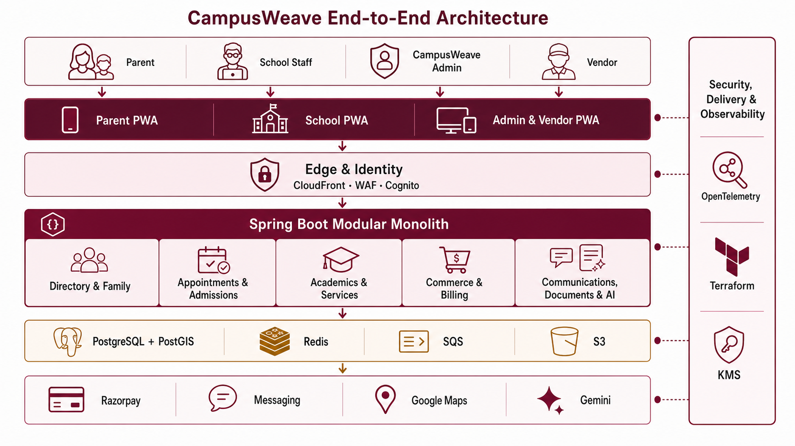

SELECTED IMPLEMENTATION BASELINE · VERSION 1.0
One master view from browser to providers, data and operations.
The first production architecture is a React PWA backed by a Java/Spring modular monolith and PostgreSQL/PostGIS on AWS. Numbered colour markers identify the exact technology responsible for each block; flow pages show how those blocks collaborate.
ARCHITECTURE AT A GLANCE
CampusWeave end-to-end technical system
A presentation-ready overview of actors, web clients, security boundary, application modules, data services and external providers.

HIGH-LEVEL SYSTEM DESIGN
End-to-end deployment and trust boundaries
Read top to bottom. A request enters through the edge and identity boundary, reaches a domain module, commits canonical state, and only then triggers asynchronous provider work.
LOW-LEVEL FLOW VIEWS
Open one system journey at a time
Each child page names actors, ordered runtime steps, technologies, unresolved decisions and links back to this master.
NUMBERED TECHNOLOGY KEY
Exact stack used in the blocks
The number and colour remain identical on the master and every child diagram.